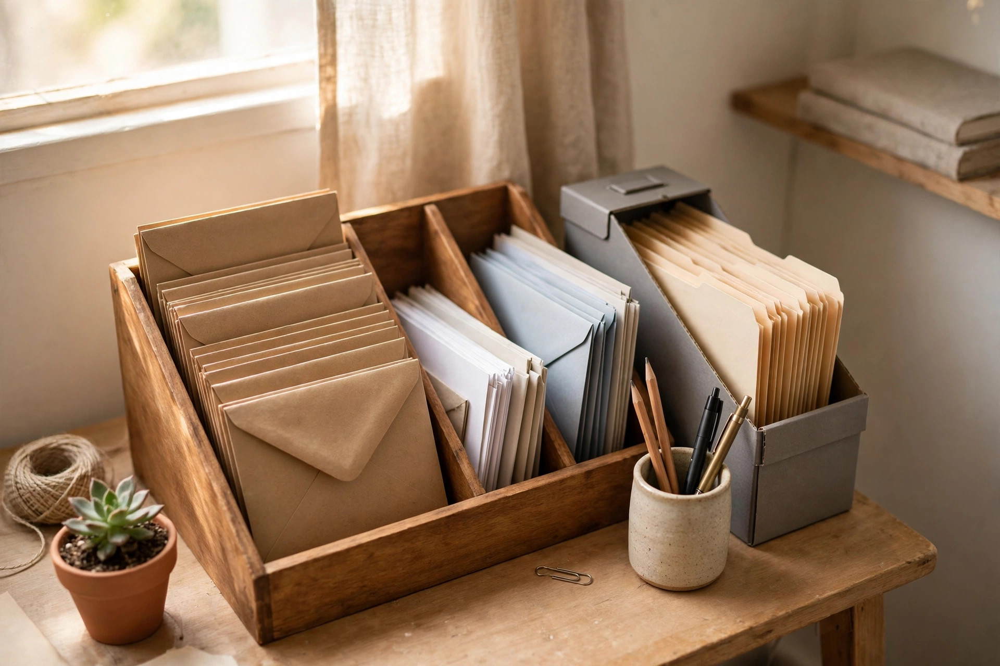

Small Space Storage & Organisation
Small Apartment Paper and Mail Organisation Ideas
Intro
Paper in a small apartment piles up silently: post on the table, bills on the kitchen counter, school letters on the fridge, old magazines on the sofa. None of it is important enough to file, and all of it is too important to throw away — so it spreads. The fix is a system with one inbox, one filing box, and a weekly routine that takes five minutes.
This guide has 12 paper and mail organisation ideas — one inbox tray, a filing box and a weekly paper routine. Each idea lists what it costs, and most cost nothing. Paper is the easiest clutter to control, because the system is small: everything comes in through one tray, and everything leaves through one decision.

1. One inbox tray by the door — $8–$12
All post goes in one tray by the front door — not on the table, not on the counter, in the tray. A tray costs about $10. The tray is the only place post is allowed to land. When the tray is the habit, paper stops appearing on every surface in the flat. Empty the tray every evening, or at least every Sunday.
2. Sort the post the day it arrives — $0
When you empty the tray, sort each item into three piles: act now, file, recycle. Junk mail goes straight in the recycling — do not put it back in the tray. Bills to pay go in the "act now" pile, which lives on the desk until it is done. Sorting takes two minutes a day and stops the tray from becoming a second pile.
3. A filing box with five folders — $10–$15
A filing box with five folders holds everything worth keeping: bills, home, health, school, and important documents. A box and folders cost about $12. One folder per category is enough — more folders mean more decisions, and the system stops being used. Keep the box on a shelf, not on the floor, so filing takes one movement.
4. A weekly paper routine — $0
Once a week, five minutes: empty the inbox tray, pay anything due, file anything worth keeping, recycle the rest. Put it on the same day as another weekly job, so you remember it — Sunday evening works for most flats. Five minutes a week beats an hour of sorting a mountain once a month.
5. A wall file for school and household papers — $10–$15
A wall file with three pockets by the desk holds the papers in use this week: school letters, forms to return, the appointment letter. It costs about $12. Wall files keep current papers visible, so nothing is forgotten — and off the table, so the table stays clear. Empty the wall file in the weekly routine.
6. Go paperless where you can — $0
Switch bills, bank statements and subscriptions to email where the option exists. Every paper bill you stop is one less thing to file. It takes a few minutes per account, once. Keep a folder in your email for bills, the same way you keep a folder in the filing box. Paperless is the cheapest storage of all — it takes no space.
7. A shredder or a shred bag — $0–$15
Old bills and letters with personal details should be shredded, not thrown away whole. A small shredder costs about $15, or keep a bag for shredding and use a shredding service when it is full. A shred bag that lives beside the filing box means old papers are dealt with in the weekly routine, not left in a pile.
8. Magazines: one in, one out — $0
Magazines pile up faster than books. Keep a small basket for the magazines you are reading now — five at most — and recycle the rest. When a new magazine arrives, an old one leaves. A basket costs about $8 if you do not already have one. Read it, tear out the page you want to keep, and recycle the rest.
9. A pinboard for the week's papers — $10–$15
A small pinboard or a magnetic board by the desk holds the week's essentials: the school timetable, the appointment card, the takeaway menu. It costs about $12. A board keeps papers visible without them living on the table. Clear the board in the weekly routine — anything still there after a week goes in the filing box or the recycling.
10. Receipts in one envelope per month — $0–$5
Receipts worth keeping go in one envelope per month, labelled with the month. Twelve envelopes cost about $5. At the end of the year, throw away the envelopes older than a year, unless you need them for tax. One envelope per month is a filing system that fits in a drawer.
11. Important documents in one folder — $5–$10
Passports, contracts, certificates and insurance papers live in one folder, in one place, that everyone in the flat knows. A folder costs about $8. It is the only folder that never gets sorted or thinned — it just lives in its place. Tell everyone where it is, so it can be found in a hurry.
12. A clear desk at the end of the day — $0
The cheapest idea costs nothing. At the end of the day, the desk holds nothing but the lamp: papers are in the tray, the filing box or the recycling. A clear desk in the evening is a desk that works in the morning. Two minutes of clearing beats an hour of searching for a letter under a pile.
Conclusion
Paper organisation is one tray, one filing box and five minutes a week. Post comes in through the tray, it is sorted the same day, filed or recycled in the weekly routine, and the table stays clear. Start with the inbox tray today — it costs about $10 and stops paper from landing anywhere else in the flat.
Budget recap
- Inbox tray + filing box: ~$22 - Wall file + pinboard: ~$25 - Envelopes + folder: ~$13
Total for a paper system: ~$25–$35 — or ~$10 with a tray alone.
Pinterest pin titles
- Small Apartment Paper and Mail Organisation Ideas
- 12 Paper Organisation Ideas for Tiny Flats (5 Minutes a Week)
- Paper Piling Up? 12 Mail Organisation Ideas That Actually Work